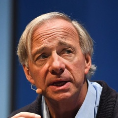

The best time isn't on a chart.
The best time to invest in Bitcoin is when you've done your own research and have money you can genuinely afford to lose.
When Bitcoin falls, it's tempting to call it a bargain. When it rallies, it's tempting to jump in before the next milestone. I've learned to be more interested in the decisions I can control than the prices I can't.
For me, preparation matters more than predicting the next move. Can I buy it without paying unnecessary fees? Can I keep it secure for years? And if I need access to my money, do I know exactly how to sell or transfer it?
Being ready doesn't guarantee a profit. It means a market surprise is less likely to turn into a personal financial emergency.
Three things I want to know first.
These are practical questions. You don't need to be a professional trader, but you should understand what happens to your money from start to finish.
1. Know where and how to buy.
Choose a reputable platform, understand your local protections, and compare the real total cost: trading fees, spreads, deposits, and withdrawals. A low advertised fee can hide an expensive price.
2. Know how to keep it safe.
Decide between exchange custody and self-custody. For long-term self-custody, understand hardware wallets, recovery phrases, secure backups, and why sending keys to anyone unverified is dangerous.
3. Know how to get it out.
Practice a small withdrawal or transfer before it matters. Check wallet addresses and network fees, learn how selling works, and understand the tax records you may need to keep.
And before any of these: keep money for essential expenses and emergencies separate from money invested in Bitcoin. Borrowing to buy a volatile asset adds another layer of risk.
Another way to see risk.
“Every investment have risk even traditional investment and no investment is 100% risk free. The highest risk is when you have the money to invest in bitcoin and you did not.”
I understand the sentiment: doing nothing has opportunity costs too. But missing a rally is not the same as losing rent money or emergency savings. The goal is to consider both possibilities, without letting fear of missing out make the decision for you.
What well-known investors are saying.
Some see opportunity. Others see danger. Their words are interesting, but none of them can know what will happen next. Every quote is dated and linked to a source.
“It should definitely move back into the six figures beyond $100,000.”
Saylor expects a recovery. Remember that Strategy has significant Bitcoin exposure, so his optimism comes with a financial stake.
“We do think the turn is in here for Bitcoin.”
Wood was commenting on Bitcoin strengthening relative to gold. That is a market view, not a guarantee of a lasting reversal.
“Bitcoin is going to go up more.”
Timmer saw evidence of a possible market bottom but also emphasised Bitcoin's cyclical volatility.
“Underweighting debt assets like bonds, and overweighting gold and a bit of Bitcoin.”

Ray DalioFounder, Bridgewater Associates · 21 Aug 2026 · Ray Dalio ↗Dalio argues for diversification, not putting everything into one asset. His phrase “a bit of Bitcoin” is doing important work here.
“If everyone adopted that conversation, it would be $500,000, $600,000, $700,000 per bitcoin.”
A hypothetical about investors allocating 2–5% to Bitcoin, not a forecast with a deadline or advice to buy at any price.
“Sell your Bitcoin before the bottom drops out of the market and buy gold!”
Schiff warns that Bitcoin could fall sharply and prefers gold. A useful reminder to test a bullish thesis against serious objections.
“Bitcoin is a gambling token, and it doesn't have any intrinsic value.”
Buffett's criticism focuses on productive value and speculation. This is an older, enduring view, not a November 2026 market call.
Read the dates, not just the headlines. A confident Bitcoin quote can age quickly. The quotes above reflect statements made at different market prices and conditions. They are individual opinions, not proof of a future return. Several speakers or their firms have financial interests linked to the assets or products they discuss.
So, are you ready?
Before wondering whether Bitcoin will rise tomorrow, try answering these questions honestly:
- I understand Bitcoin's risks and why its price can move sharply.
- I have enough for essential expenses and emergencies without selling Bitcoin.
- Any Bitcoin money is money I can afford to lose, not borrowed money.
- I know a reputable place to buy and have compared the total fees and price.
- I have a plan for secure custody, backups, and account recovery.
- I know how to transfer or sell Bitcoin and keep records for tax.
You don't need to get rich quickly. You need a plan you can live with, even when the market doesn't cooperate.
You can't control Bitcoin's next move. You can control your next decision.
Do your own research. Be clear about the risks. Learn how to buy, protect, and access your Bitcoin. And remember: deciding not to buy yet can be a thoughtful choice, too.
Explore more Bitcoin questionsInvestor quotations are brief excerpts from dated interviews, original commentary, or reporting linked above. Quotations are not endorsements of Bitcoin Logbook. The Bitcointalk quote is reproduced as originally written.
Photos via Wikimedia Commons, cropped: Michael Saylor by Gage Skidmore, CC BY-SA 3.0; Cathie Wood by Caroline Wood, CC BY-SA 4.0; Ray Dalio by Web Summit, CC BY 2.0; Larry Fink by Wilson Center, CC BY-SA 3.0; Peter Schiff by Gage Skidmore, CC BY-SA 3.0; Warren Buffett by Mark Hirschey, CC BY-SA 2.0.